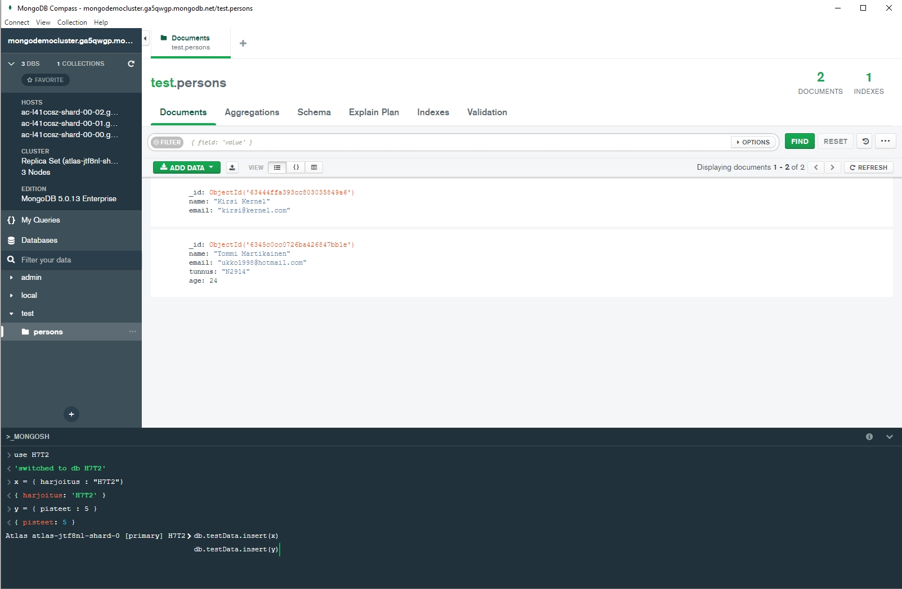
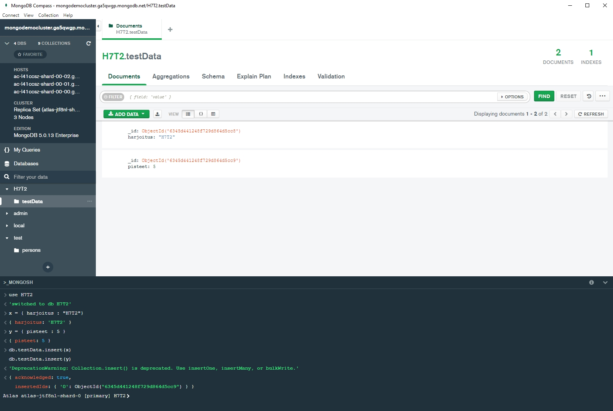

Takaisin
insert


insert for-loopin avulla ja uusi kokoelmakin (mahdollisetPisteet) muodostui automaattisesti tällä samalla loitsulla
find
remove
dokumenttiin alkion lisääminen (kuvassa näkyy myös virheet joita tein, ennenkun onnistuin)